Hear how it answers in Urduسنیں اردو میں کیسے جواب دیتا ہے
Press play to hear a sample reply read aloud by your own device. The app speaks with the Urdu voice installed on your phone. The video shows the real app: a spoken ledger entry and the answer on screen.نیچے بٹن دبا کر نمونے کا جواب اپنے ہی فون/براؤزر کی اردو آواز میں سنیں۔ ایپ بھی آپ کے فون میں نصب اردو آواز سے بولتی ہے۔ ویڈیو میں اصل ایپ ہے: بول کر کھاتے کا اندراج اور اسکرین پر جواب۔
Sample text. The voice comes from your device.نمونے کا متن۔ آواز آپ کے ڈیوائس کی ہے۔
Real screens from the appایپ کی اصل اسکرینیں
Screenshots from an Android phone running the current version. Swipe to see more.موجودہ ورژن چلانے والے Android فون کے اسکرین شاٹس۔ مزید کے لیے سوائپ کریں۔
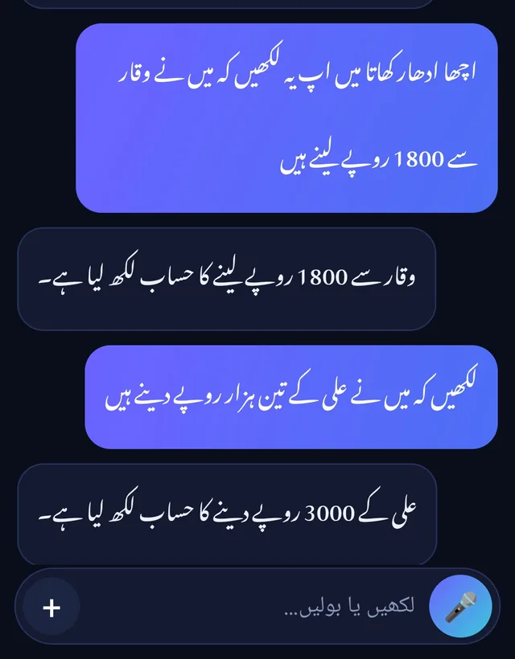
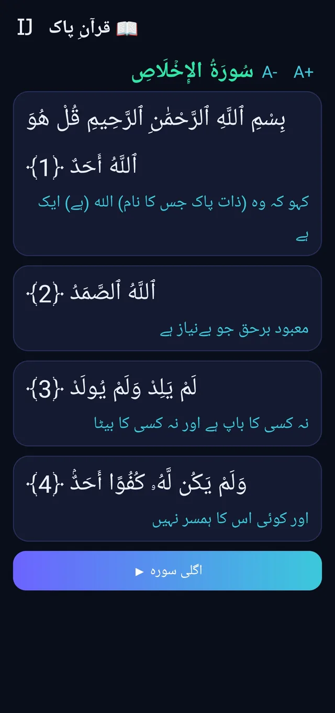
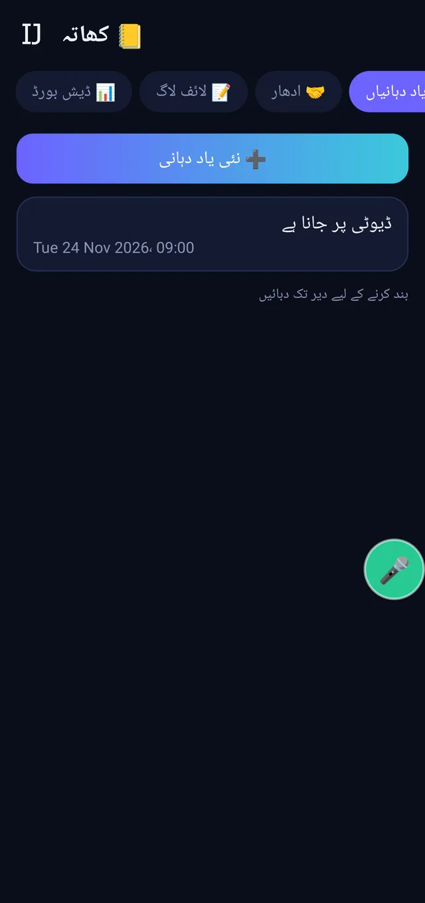
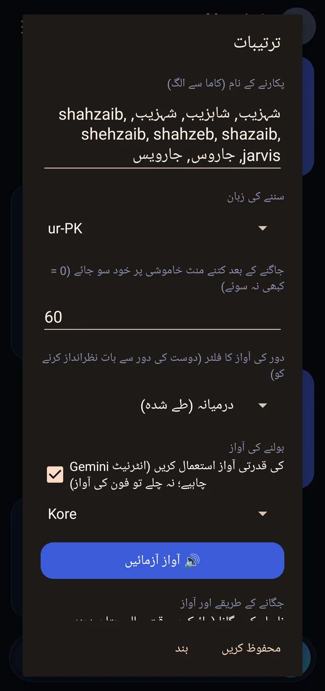
One app for the things you do every dayروزمرہ کے کام ایک ہی ایپ میں
Say it or tap it. Each feature works on its own screen too.بول کر کریں یا ٹیپ کر کے۔ ہر سہولت کی اپنی الگ اسکرین بھی ہے۔
Daily ledger and udharروزمرہ کھاتہ اور ادھار
Say what happened. Rotis from the canteen, petrol, a loan to a friend. The app saves it with the date and shows what you are owed and what you owe, per person. Your entries stay on your phone and survive app updates. New in 6.1: pick a person straight from your contacts, and send them a polite udhar reminder on WhatsApp from their page.جو ہوا بتا دیں۔ کینٹین کی روٹیاں، پٹرول، دوست کو ادھار۔ ایپ تاریخ کے ساتھ لکھتی ہے اور ہر شخص کا لینا دینا دکھاتی ہے۔ ڈیٹا آپ کے فون میں رہتا ہے اور اپڈیٹ سے ضائع نہیں ہوتا۔ 6.1 میں نیا: شخص کو سیدھا اپنے contacts سے چنیں، اور اس کے صفحے سے اسے WhatsApp پر شائستہ ادھار یاد دہانی بھیجیں۔
Sample rows to show the layout.ترتیب سمجھانے کے لیے نمونہ۔
Prayer times and Qiblaنماز کے اوقات اور قبلہ
Choose your city, Hanafi or other method, and which prayers to be reminded of. Time left to the next prayer shows in the status bar. New in 6.1: the assistant speaks the takbeer aloud when a prayer time starts, and a built-in compass shows the Qibla direction.اپنا شہر اور مسلک چنیں، اور جن نمازوں کی اطلاع چاہیے وہ منتخب کریں۔ اگلی نماز میں کتنا وقت ہے یہ اسٹیٹس بار میں دکھتا ہے۔ 6.1 میں نیا: نماز کا وقت ہوتے ہی اسسٹنٹ تکبیر بول کر اطلاع دیتا ہے، اور اندر بنا کمپاس قبلے کی سمت دکھاتا ہے۔
Quran and hadithقرآن اور احادیث
Urdu translation beside every verse. Download once, read offline.ہر آیت کے ساتھ اردو ترجمہ۔ ایک بار ڈاؤن لوڈ، پھر آف لائن۔
Remindersیاد دہانیاں
Spoken or typed, daily or one-time, on time.بول کر یا لکھ کر، روزانہ یا ایک بار، ٹھیک وقت پر۔
Cameraکیمرہ
Ask it to look through the front or back camera, or scan a receipt.کہیں کہ آگے یا پیچھے کے کیمرے سے دیکھے، یا رسید اسکین کرے۔
PDF and file transfer (testing)PDF اور فائل ٹرانسفر (جانچ جاری)
Scan to PDF, merge or split PDFs, and send files to another phone or computer with a QR code, no cable and no extra app on the other side.اسکین سے PDF، PDF جوڑنا یا الگ کرنا، اور QR سے دوسرے فون یا کمپیوٹر کو فائل بھیجنا۔ نہ تار، نہ دوسری طرف کوئی ایپ۔
Find my phoneفون ڈھونڈو
Set a secret code. If your phone is lost, text FIND and your code from another phone: it rings loudly and replies with its battery level and last known location.خفیہ کوڈ رکھیں۔ فون گم ہو تو دوسرے فون سے FIND اور اپنا کوڈ SMS کریں: فون تیز بجے گا اور بیٹری اور آخری معلوم مقام جواب میں بھیجے گا۔
New in 6.1: the main features are now big tiles on the home screen — prayer times, Quran, khata, find-my-phone and Qibla, one tap away.6.1 میں نیا: اہم سہولتیں اب ہوم اسکرین پر بڑے tiles میں ہیں — نماز کے اوقات، قرآن، کھاتہ، فون ڈھونڈیں اور قبلہ، صرف ایک ٹیپ پر۔
New in 6.2: arrival-message places can now be picked on a map — search for the place and drop a pin instead of having to stand there.6.2 میں نیا: پہنچنے پر پیغام کی جگہ اب نقشے سے چنی جا سکتی ہے — جگہ تلاش کر کے پن لگا دیں، وہاں کھڑے ہونے کی ضرورت نہیں۔
See the full list of voice commands you can sayآواز کی کمانڈز کی مکمل فہرست دیکھیں
What works without internetکیا کچھ انٹرنیٹ کے بغیر چلتا ہے
Most of the app keeps working offline. Only chat, translation and the other Gemini features need a connection.ایپ کا بڑا حصہ آف لائن چلتا ہے۔ صرف گفتگو، ترجمہ اور Gemini والی سہولتوں کو انٹرنیٹ چاہیے۔
Offlineبغیر انٹرنیٹ
- Prayer times, next-prayer countdown, Qiblaنماز کے اوقات، اگلی نماز کی گنتی، قبلہ
- Quran with Urdu translation and hadith books (one download first)اردو ترجمے کے ساتھ قرآن اور احادیث (پہلے ایک بار ڈاؤن لوڈ)
- Daily ledger and udharروزمرہ کھاتہ اور ادھار
- Reminders, tasbeeh, zakat calculatorیاد دہانیاں، تسبیح، زکوٰۃ کیلکولیٹر
- PDF tools, scanner, QR codes, private vaultPDF اوزار، اسکینر، QR کوڈ، نجی والٹ
- File transfer between phones on the same Wi-Fi (still being tested)ایک Wi-Fi پر فون سے فون فائل ٹرانسفر (ابھی جانچ جاری ہے)
Needs internet and your Gemini keyانٹرنیٹ اور Gemini key چاہیے
- Voice and text chat in Urduاردو میں بول کر اور لکھ کر گفتگو
- Translation between Urdu, English and moreاردو، انگریزی اور دیگر زبانوں میں ترجمہ
- Reading photos, receipts and PDFs you attachآپ کی بھیجی تصویر، رسید اور PDF پڑھنا
- Meeting recordings turned into a short summaryمیٹنگ کی ریکارڈنگ سے مختصر خلاصہ
- Freelance gig and proposal ideasفری لانس گِگ اور پروپوزل کے آئیڈیاز
A free key has daily limits. If you reach them, the app tells you and the offline features keep working.مفت key کی روزانہ حد ہوتی ہے۔ حد ختم ہو تو ایپ بتا دیتی ہے اور آف لائن سہولتیں چلتی رہتی ہیں۔
Start in three stepsتین قدم میں شروع کریں
Install the APKAPK انسٹال کریں
Download it from this page and open it. Allow installs from this source when Android asks.اس صفحے سے ڈاؤن لوڈ کر کے کھولیں۔ Android پوچھے تو اس ذریعے سے انسٹال کی اجازت دیں۔
Add your free Gemini keyاپنی مفت Gemini key لگائیں
Create it at Google AI Studio and paste it into Settings. It stays on your phone.Google AI Studio سے بنائیں اور ترتیبات میں پیسٹ کریں۔ وہ آپ کے فون میں رہتی ہے۔
Speakبولیں
Tap the mic or say the assistant's name. Give permissions only for what you want to use.مائیک دبائیں یا اسسٹنٹ کا نام لیں۔ اجازتیں صرف انہی سہولتوں کی دیں جو آپ کو چاہییں۔
See it in actionخود دیکھیں
Speak a ledger entryبول کر کھاتہ لکھوائیں
Udhar and roti accounts, written by voice.ادھار اور روٹی کا حساب آواز سے۔
Get your free Gemini keyمفت Gemini key بنائیں
Step by step, about one minute.قدم بہ قدم، تقریباً ایک منٹ۔
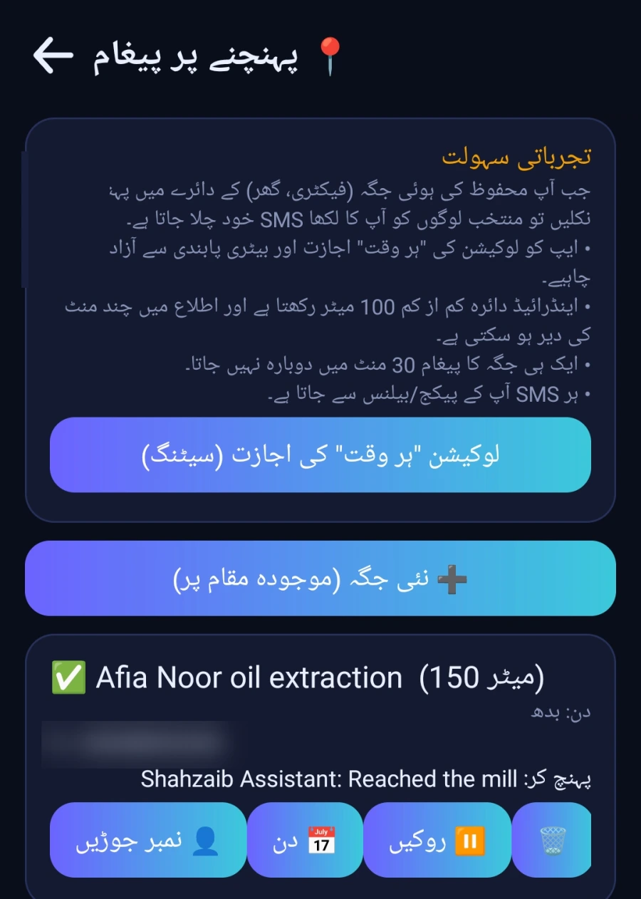
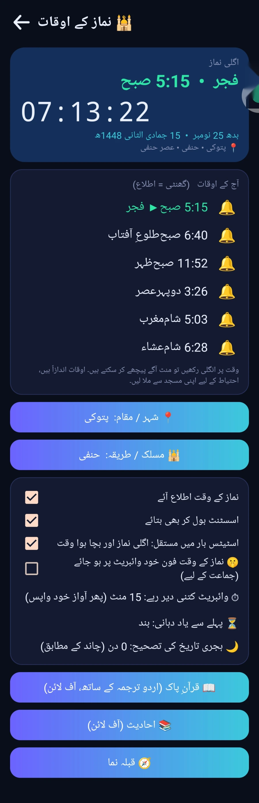
See it on a real phoneاصل فون پر دیکھیں
These are screenshots from the app running on an Android phone. Pick a feature on the side.یہ Android فون پر چلتی ایپ کے اصل اسکرین شاٹس ہیں۔ ساتھ سے کوئی سہولت چنیں۔
Your day at a glanceآپ کا دن ایک نظر میں
Next prayer countdown, ledger totals and one-tap assistant.اگلی نماز کی گنتی، کھاتے کا حساب اور اسسٹنٹ ایک بٹن پر۔
Offline tools, online helpersبغیر انٹرنیٹ اور انٹرنیٹ والے اوزار
Prayer, Quran, ledger, QR and more work without internet.نماز، قرآن، کھاتہ، QR اور بہت کچھ بغیر انٹرنیٹ۔
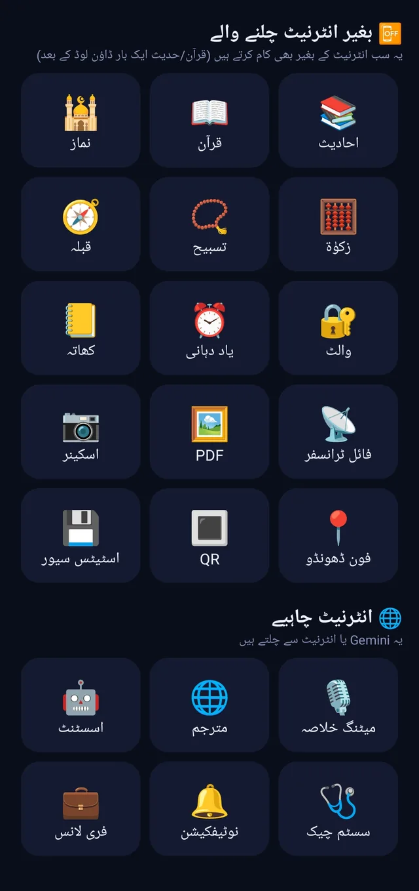
Talk or type in Urduاردو میں بولیں یا لکھیں
Say a ledger entry. It writes it down and confirms.کھاتے کی بات بولیں، وہ لکھ کر بتا دیتا ہے۔
Udhar ledgerادھار کھاتہ
Who owes you, who you owe, in one screen.کس سے لینے ہیں اور کسے دینے ہیں، ایک اسکرین پر۔
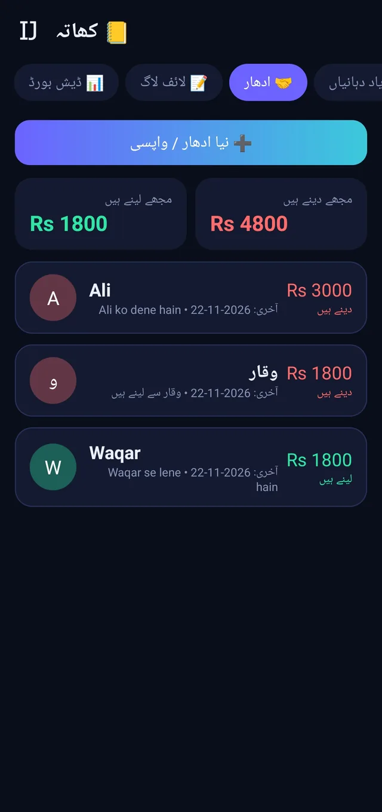
Prayer timesنماز کے اوقات
City, madhab, live countdown and per-prayer alerts.شہر، مسلک، لائیو گنتی اور ہر نماز کی اطلاع۔
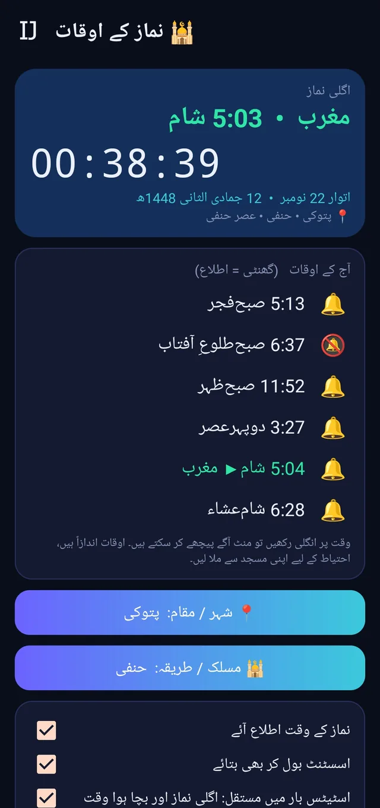
Quran with Urdu translationقرآن اردو ترجمے کے ساتھ
Read ayah by ayah with Urdu below.ہر آیت کے نیچے اردو ترجمہ۔
Remindersیاد دہانیاں
Set by voice, rings at the time.بول کر لگائیں، وقت پر بجتی ہیں۔
File transfer by QRQR سے فائل ٹرانسفر
Scan the QR on the other phone, no app needed.دوسرے فون سے QR اسکین کریں، ایپ کی ضرورت نہیں۔
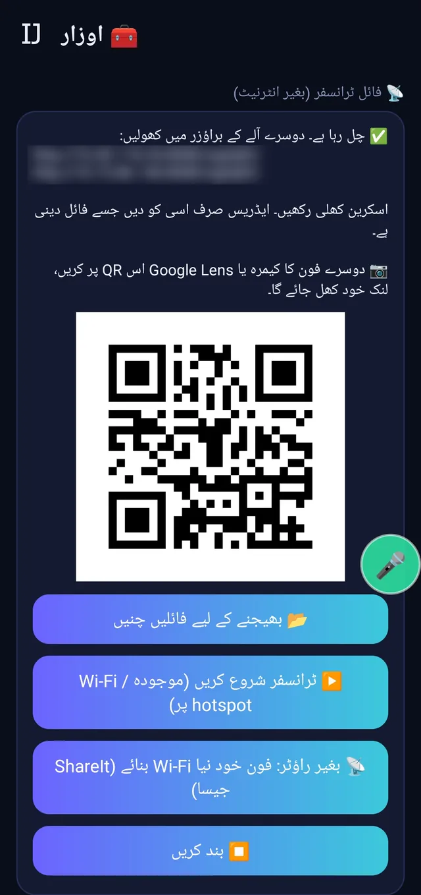
Everything in one menuسب کچھ ایک مینو میں
Home, ledger, Quran, hadith, tools and settings.ہوم، کھاتہ، قرآن، احادیث، اوزار اور ترتیبات۔
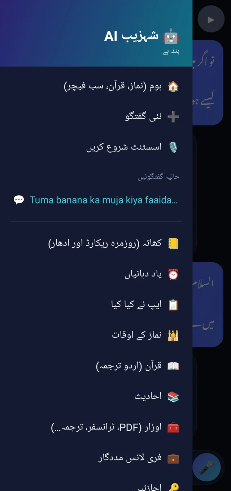
Ask what it can doپوچھیں کیا کیا کر سکتا ہے
Calls, maps, weather, files and memory.کال، نقشہ، موسم، فائلیں اور یادداشت۔
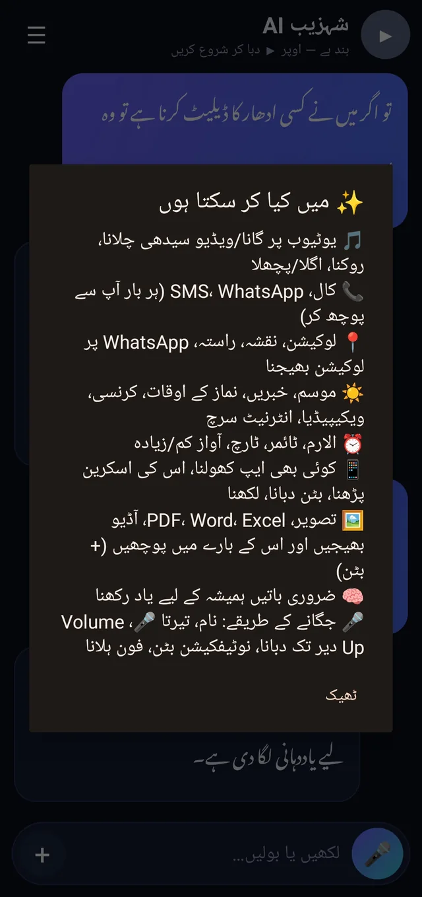
Find my phone by SMSSMS سے فون ڈھونڈیں
Text FIND and your PIN; it replies with location and battery.FIND اور اپنا PIN بھیجیں، لوکیشن اور بیٹری کا جواب آتا ہے۔
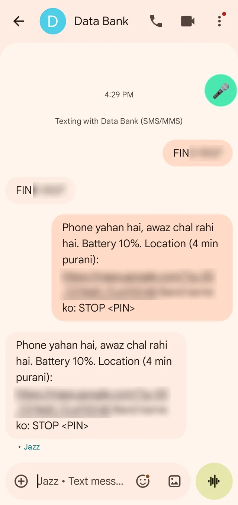
Your rulesآپ کی ترتیبات
Wake names, voice, sleep timer and call assistant.پکارنے کے نام، آواز، نیند کا وقت اور کال اسسٹنٹ۔
Get Shahzaib AI for Androidشہزیب AI Android کے لیے حاصل کریں
Shahzaib AI 6.2
SHA-256 of this exact file. Compare it after downloading:اس فائل کا SHA-256۔ ڈاؤن لوڈ کے بعد ملا لیں:
0bf061b7e6fbd97a7e0384e9a0a39d0a896c551702788363aee7cf9580d33389Before you installانسٹال سے پہلے
- Not on the Play Store, so Android may warn you. Tap More details, then Install anyway.Play Store پر نہیں ہے، اس لیے Android انتباہ دے سکتا ہے۔ مزید تفصیل ← پھر بھی انسٹال کریں۔
- Chat needs your own free Gemini key.گفتگو کے لیے اپنی مفت Gemini key چاہیے۔
- Permissions are asked only for features you use.اجازتیں صرف انہی سہولتوں کی مانگی جاتی ہیں جو آپ استعمال کریں۔
Step-by-step install guideانسٹال کی مکمل گائیڈ · Get a Gemini keyGemini key بنائیں · What changedکیا بدلا · Need help / report a bugمدد چاہیے / مسئلہ بتائیں
Shahzaib AI for PC (Windows)شہزیب AI اب PC پر بھی (Windows)
The same Urdu voice assistant, now for your computer: control your PC by voice, chat with Gemini, dictate in Urdu, manage files and Excel sheets — even fill attendance from Odoo or an Attendance Report PDF.وہی اردو آواز والا اسسٹنٹ، اب آپ کے کمپیوٹر کے لیے: آواز سے PC چلائیں، Gemini سے بات کریں، اردو میں بول کر لکھیں، فائلیں اور Excel سنبھالیں — بلکہ Odoo یا حاضری رپورٹ PDF سے حاضری بھی بھریں۔
Watch it listen: the wave moves as the assistant hears your Urdu voice.اسے سنتے ہوئے دیکھیں: جب اسسٹنٹ آپ کی اردو آواز سنتا ہے تو لہر چلتی ہے۔
Shahzaib AI — PC Assistant
Just install and add your own free Gemini key in Settings — no Python or setup work needed. Windows may show a SmartScreen note for this new app: choose "More info", then "Run anyway".بس انسٹال کریں اور Settings میں اپنی مفت Gemini key لگا دیں — نہ Python، نہ کوئی جھنجھٹ۔ Windows نئی app پر SmartScreen کی تنبیہ دکھا سکتا ہے: "More info" پھر "Run anyway" منتخب کریں۔
Your data stays on your phoneآپ کا ڈیٹا آپ کے فون میں رہتا ہے
There is no account and no server of ours in the middle. Chat messages go straight from your phone to Google with your own key. You can lock the app with a PIN or fingerprint.نہ کوئی اکاؤنٹ ہے، نہ بیچ میں ہمارا کوئی سرور۔ گفتگو آپ کی اپنی key سے سیدھی آپ کے فون سے Google کو جاتی ہے۔ ایپ کو PIN یا فنگر پرنٹ سے بند بھی کر سکتے ہیں۔ Read the privacy policy.رازداری کی پالیسی پڑھیں۔
Questions people askعام سوالات
Is it free?کیا یہ مفت ہے؟
Downloading and using the app is free. The chat features use Google Gemini through your own free key, and Google sets that key's daily limits.ایپ ڈاؤن لوڈ اور استعمال مفت ہے۔ گفتگو والی سہولتیں آپ کی اپنی مفت key سے Google Gemini استعمال کرتی ہیں، اور اس key کی روزانہ حد Google طے کرتا ہے۔
Why does Android show a warning when I install?انسٹال پر Android انتباہ کیوں دیتا ہے؟
The app is not on the Play Store, so Play Protect warns about it. Tap More details, then Install anyway. The app asks only for permissions you choose to give.ایپ Play Store پر نہیں ہے اس لیے Play Protect انتباہ دیتا ہے۔ More details پھر Install anyway دبائیں۔ ایپ صرف وہی اجازتیں مانگتی ہے جو آپ دینا چاہیں۔
Does it work on iPhone?کیا iPhone پر چلتی ہے؟
No. It is an Android app only.نہیں۔ یہ صرف Android کی ایپ ہے۔
Is the microphone always on?کیا مائیک ہر وقت چالو رہتا ہے؟
While the assistant is running it listens for its name using Android's speech recognition, and you can switch to button-only listening in Settings. You can stop it at any time.اسسٹنٹ چل رہا ہو تو وہ Android کی آواز پہچاننے والی سروس سے اپنا نام سنتا رہتا ہے، اور ترتیبات میں صرف بٹن سے سننے کا طریقہ بھی چن سکتے ہیں۔ جب چاہیں بند کر سکتے ہیں۔
Can it make phone calls for me?کیا یہ میری طرف سے کال کر سکتا ہے؟
It can place a call or send a message when you ask and confirm. It cannot speak to the other person during a call, because Android does not allow apps to do that.آپ کہیں اور تصدیق کریں تو کال ملا سکتا ہے یا پیغام بھیج سکتا ہے۔ کال کے دوران دوسرے شخص سے بات نہیں کر سکتا، کیونکہ Android ایپس کو اس کی اجازت نہیں دیتا۔
Which phones does it run on?کن فونز پر چلتی ہے؟
Android 8 or newer. It is tested mainly on an Infinix Note 12 with Android 13, so on other brands some features may behave differently.Android 8 یا نیا۔ اس کی جانچ زیادہ تر Android 13 والے Infinix Note 12 پر ہوئی ہے، اس لیے دوسرے برانڈ پر کچھ سہولتیں مختلف چل سکتی ہیں۔
Is every feature finished?کیا ہر سہولت مکمل ہے؟
The app is still being tested on real phones. Some features depend on your phone model and Android version. If something does not work for you, the System check screen in the app shows what is missing.ایپ کی اصل فونز پر جانچ جاری ہے۔ کچھ سہولتیں آپ کے فون کے ماڈل اور Android ورژن پر منحصر ہیں۔ کچھ نہ چلے تو ایپ کی "سسٹم چیک" اسکرین بتاتی ہے کہ کیا کمی ہے۔
Try Shahzaib AI on your phoneشہزیب AI اپنے فون پر آزمائیں
Free to download. Version 6.2 for Android.ڈاؤن لوڈ مفت۔ Android کے لیے ورژن 6.2۔